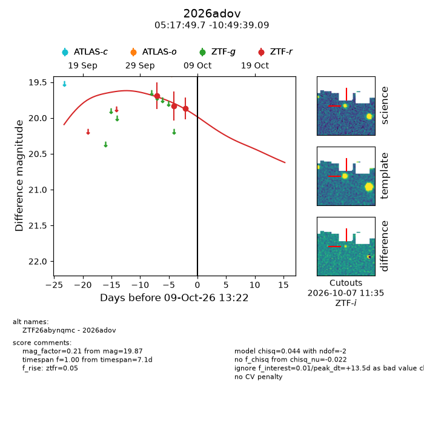
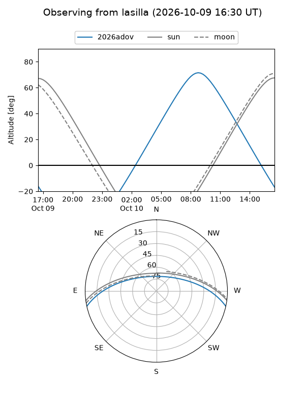
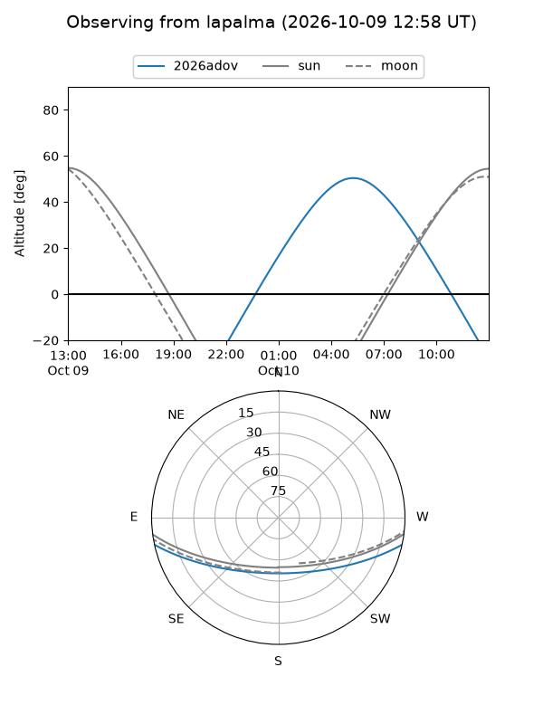
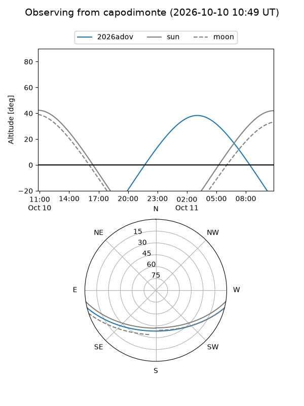
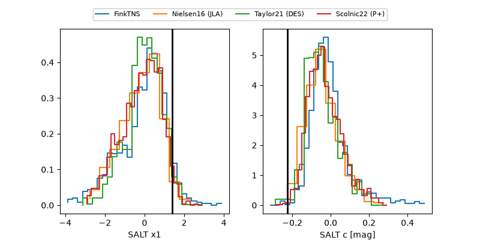

2026adov
Target 2026adov at 2026-10-09 13:25
Aliases and brokers:
FINK-ZTF: ztf.fink-portal.org/ZTF26abynqmc
Lasair-ZTF: lasair-ztf.lsst.ac.uk/objects/ZTF26abynqmc
ALeRCE-ZTF: alerce.online/object/ZTF26abynqmc
YSE-PZ: ziggy.ucolick.org/yse/transient_detail/2026adov
TNS name: wis-tns.org/object/2026adov
Direct TNS query: direct search
alt names
ZTF26abynqmc (ztf,fink_ztf)
2026adov (tns,yse)
Coordinates:
equatorial (ra, dec) = 79.4573,-10.82753
equatorial (HMS+DMS) = 05:17:49.75,-10:49:39.09
galactic (l, b) = (212.2520,-25.64876)
Flags:
peak dt: +13.5
Photometry:
last ztfr=19.87
3 ztfr detections
Lightcurve

Visibility



Additional plots
